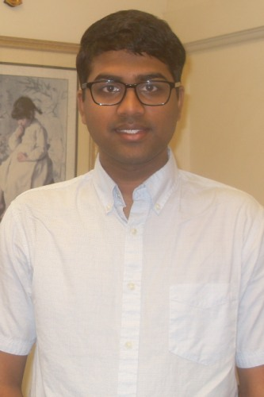

Pratyush Potu
I am a fifth-year Ph.D. student in the Division of Applied Mathematics at Brown University, advised by Johnny Guzmán.
I am broadly interested in numerical methods for partial differential equations. During my Ph.D., I have explored how ideas from topology, geometry, and combinatorics can be used in the development and analysis of these methods.
Before Brown, I received a B.Sc. in Mathematics from the University of Texas at Austin, with a certificate in Scientific Computation and Data Science. I am grateful to be currently supported by the Center for Information Geometric Mechanics and Optimization (CIGMO).
- pratyush_potu [at] brown [dot] edu
- Address
- Division of Applied Mathematics, Brown University, Providence, RI 02912
- Links
- CV (PDF) Google Scholar arXiv
Research
My research concerns structure-preserving discretization of partial differential equations (PDE). The philosophy behind this research is that numerical methods should preserve key properties satisfied by solutions of the PDE being approximated. Methods built in this way are generally stable and avoid spurious, unphysical solutions.
News
- Attending the workshop Finite Element Tensor Calculus: Discrete Structures and Compatible Discretizations, University of Oxford, UK
- Talk at the SIAM Conference on Computational Science and Engineering (CSE27), Pittsburgh, PA
- Talk at the Finite Element Circus, University of Connecticut, Avery Point, Groton, CT
- Talk at the Workshop on Discretization of Differential Complexes, Erwin Schrödinger Institute, Vienna, Austria
- Talk at the Finite Element Circus, Tufts University, Medford, MA
- Attended the ICERM Workshop on Simulation-Based Optimization with Applications, Providence, RI
- Talk at the AMS Spring Eastern Sectional Meeting, Boston College, Chestnut Hill, MA
- Talk at the Finite Element Circus, George Mason University, Arlington, VA
- Poster at the IMSI Workshop on Discrete Exterior Calculus, Chicago, IL
- Presentation at the EMS School on Mathematical Modelling, Numerical Analysis and Scientific Computing, Kácov, Czech Republic
- Talk at the AMS Spring Eastern Sectional Meeting, Hartford, CT
- Talk at the Finite Element Circus, Oakland University, Rochester, MI
- Talk at the SIAM Conference on Computational Science and Engineering (CSE25), Fort Worth, TX
- Attended the Finite Element Circus, Brown University, Providence, RI
- Participating in the ICERM Semester Program in Numerical PDEs, Providence, RI
- Attended the Finite Element Circus, Bridgewater State University, Bridgewater, MA
Publications and Preprints
- A framework for analysis of DEC approximations to Hodge-Laplacian problems using generalized Whitney forms arXiv Journal
- Local L2-bounded commuting projections using discrete local problems on Alfeld splits arXiv
- Discrete Poincaré inequalities: a review on proofs, equivalent formulations, and behavior of constants arXiv Journal
- Discrete Poincaré and Bogovskiĭ operators on cochains and Whitney forms arXiv
- Bounded, commuting, discrete-trace preserving projections arXiv
- A symmetric counterexample to Strang’s conjecture for bivariate C1 cubic splines on triangulations arXiv
- Discrete Poincaré and Bogovskiĭ operators for higher order finite element de Rham complexes arXiv
Teaching
I have been a teaching assistant at Brown for Statistical Inference I (Fall 2023) and Applied Partial Differential Equations I (Spring 2024). Through Brown’s Directed Reading Program I have mentored seven undergraduates in semester-long reading projects, on various topics in Applied Mathematics.
Service
- Brown SIAM Student Chapter (Executive member since 2023)
- Organizer of the Brown Applied Math Graduate Student Seminar (since 2023)
- Reviewer for the IMA Journal of Numerical Analysis and Calcolo